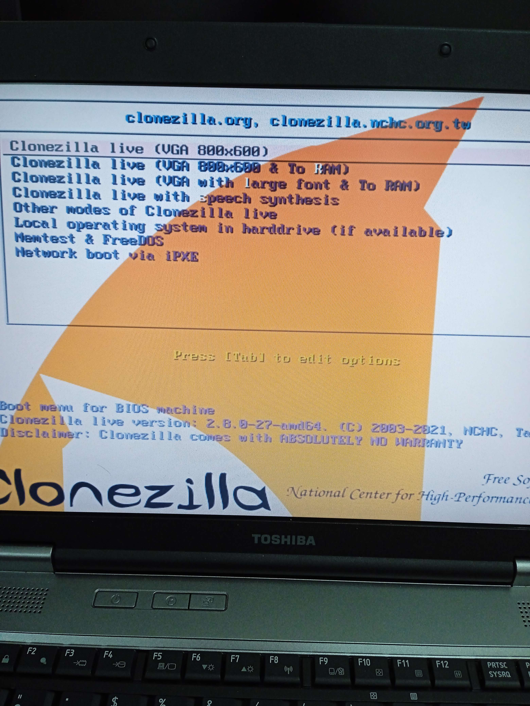
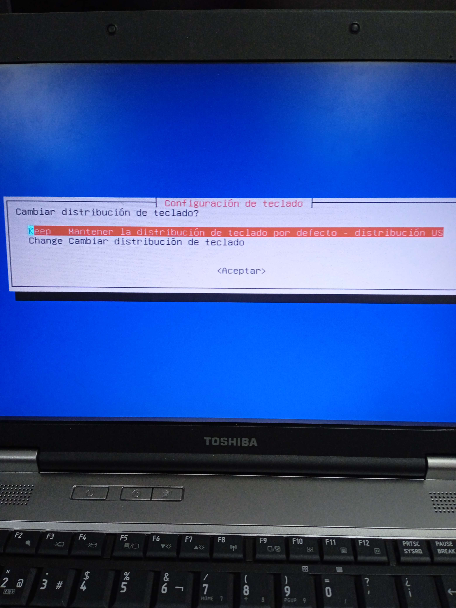
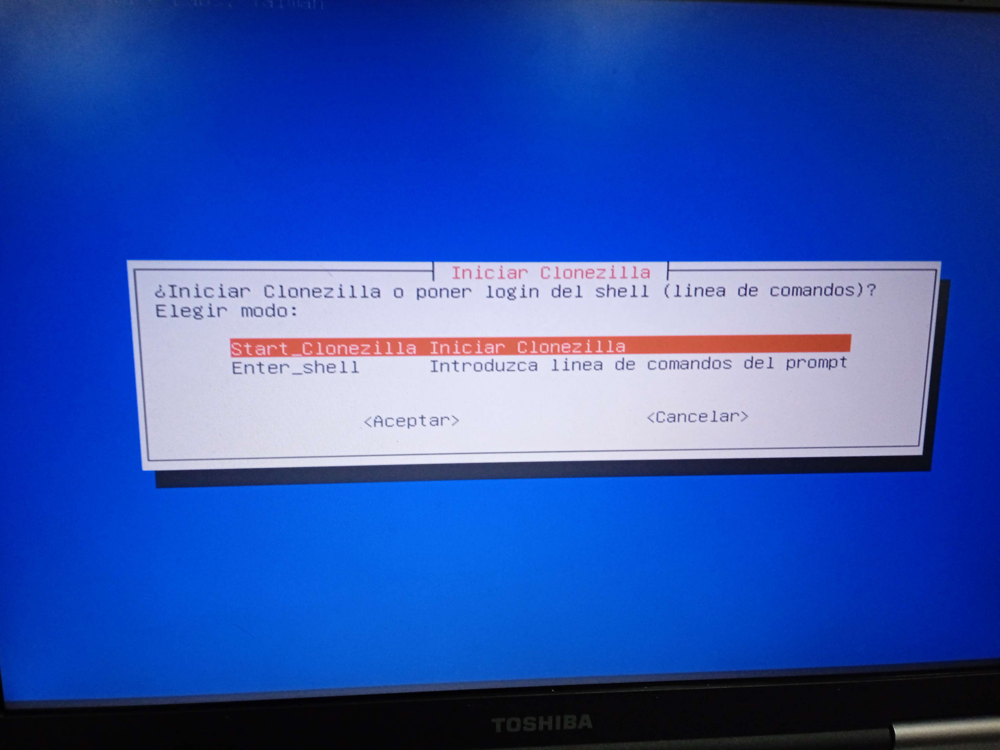
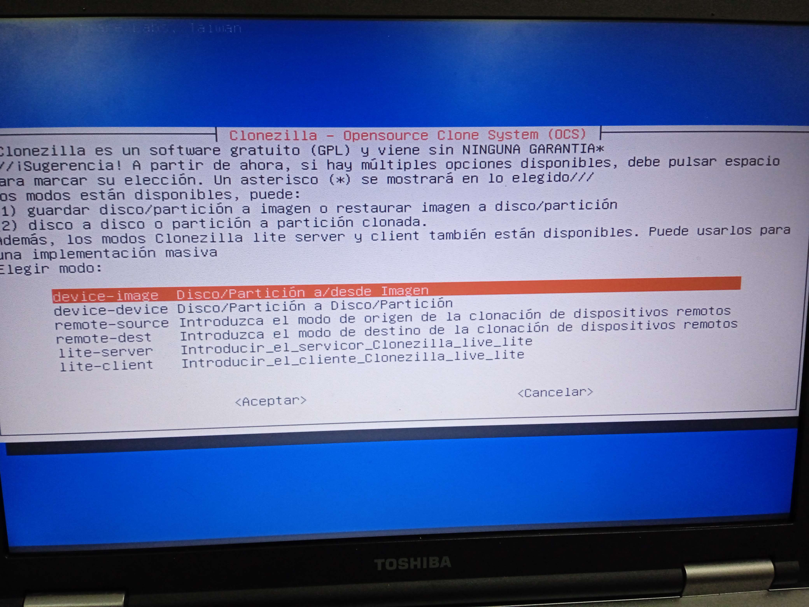
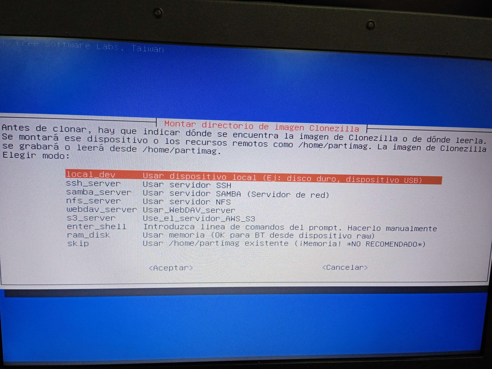
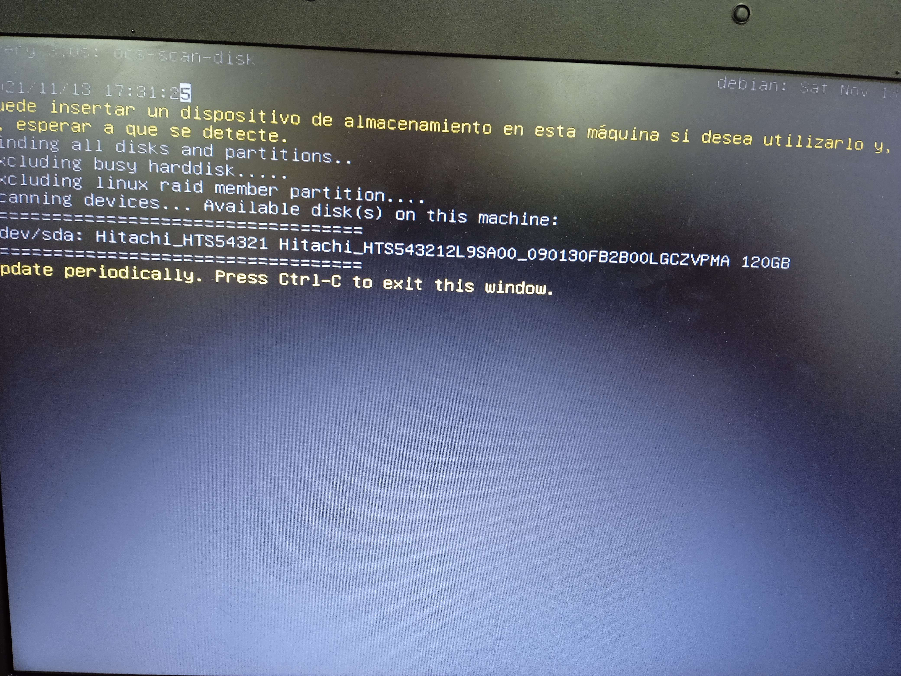
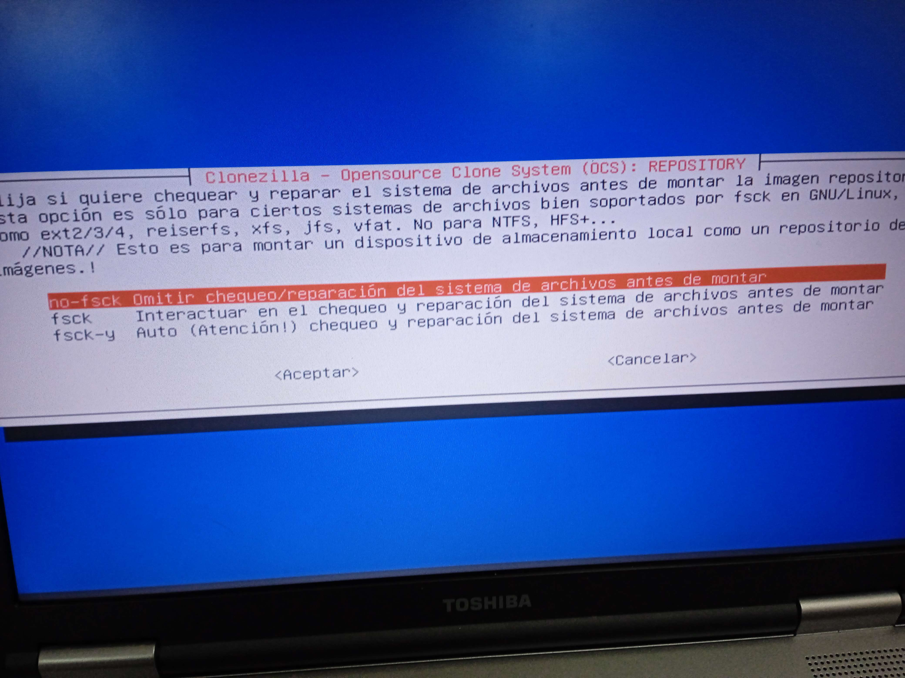
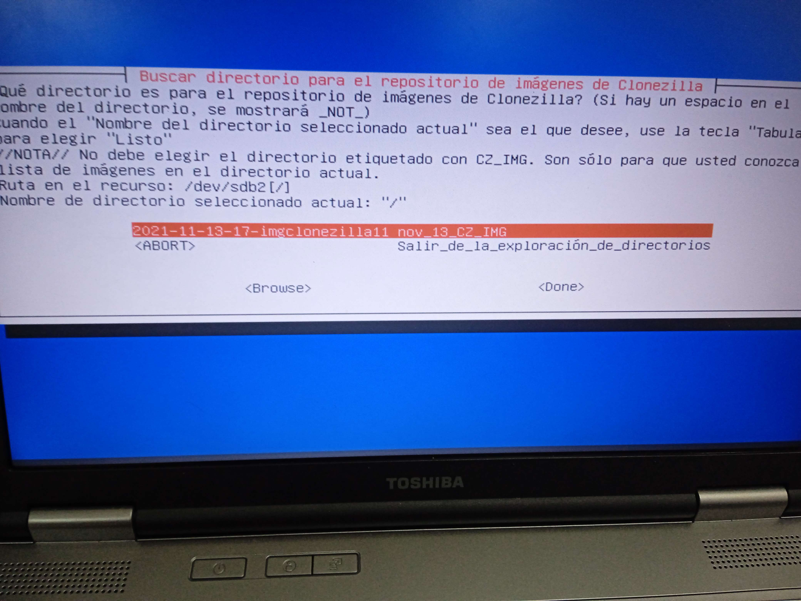

Una vez instalado el software, el siguiente paso será clonar el sistema operativo.
Para ello, arrancamos el equipo desde el usb con el pendrive insertado
Una vez entremos al menu de clonecilla, nos saldrá el siguiente menu:
Seleccionamos clonezilla lvie VGA
El siguiente paso será configurar la distribución de teclado.
Mantendremos la distribución por defecto

Iniciamos clonezilla
Seleccionamos la opción "Disco/Partición a/desde imagen.
Con esta opción podremos clonar nuestra partición (o disco)"
Para usar nuestro USB, seleccionamos la opción de usar un dispositivo local.
Esto nos permite usar como dispositivo cualquier memoria, pero lo mas accesible es utilizar un usb
Para realizar el proceso más rapidamente, omitiremos el chequeo y la reparación de los archivos antes del montaje
Tampoco es mala opción realizar este checqueo, pero el proceso durará más tiempo
Seleccionamos la imagen que deseamos copiar
En este caso solamente tenemos una partición en el sistema, por lo que no nos permitira seleccionar otra
Seleccionamos la opcón por defecto, finalizando con esto el proceso

Una vez terminemos, apagamos el equipo y retiramos el pendrive